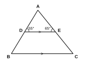
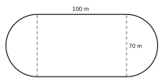

| පරීක්ෂකගේ ප්රයෝජනය සඳහා පමණි | |
|---|---|
| I කොටස – A | / 30 |
| I කොටස – B | / 20 |
| II කොටස | / 50 |
| එකතුව | / 100 |
A කොටස – සියලුම ප්රශ්නවලට දී ඇති ඉඩෙහි පිළිතුරු සපයන්න. (එකකට ලකුණු 2)
1, 4, 9, 16, … සංඛ්යා රටාවේ සාධාරණ පදය ලියා, එහි 12 වන පදය සොයන්න.
ඉලක්කම් හතරේ විශාලතම ද්විමය සංඛ්යාව හා එහි දහයේ පාදයේ අගය ලියන්න.
සුළු කරන්න: 56 – 14 × 23
භාණ්ඩයක මිල රු. 800 සිට රු. 680 දක්වා අඩු කරන ලදී. අඩු කිරීමේ ප්රතිශතය සොයන්න.
සාධක සොයන්න: a2 – 2a – 15
18, 2 හි බලයක් ලෙස ලියන්න.
6.05 × 10−3 සාමාන්ය දශම සංඛ්යාවක් ලෙස ලියන්න.
විසඳන්න: 0.5x + 3 = 8
2a = 14 දී ඇති විට a = 7 ලැබේ. භාවිත කළ ප්රත්යක්ෂය ලියන්න.
සරල රේඛාවක් මත පිහිටි බද්ධ කෝණ තුනක් 2x, 3x හා 4x වේ. x හි අගය සොයන්න.
අරය 14 cm වූ වෘත්ත පාදකයක (වෘත්තයකින් හතරෙන් එකක) පරිමිතිය සොයන්න. (π = 227)
සෘජුකෝණාස්රයක දිග 12 cm ද විකර්ණය 13 cm ද වේ. එහි පළල සොයන්න.
විසඳන්න: x3 – 1 ≥ 2
A = {a, b, c} වේ. හරියටම අවයව දෙකක් ඇති A හි සියලු උපකුලක ලියන්න.
සවිධි බහුඅස්රයක එක් එක් අභ්යන්තර කෝණය 160° වේ. පාද ගණන සොයන්න.
B කොටස – ප්රශ්න දෙකටම මෙම පත්රයේම පිළිතුරු සපයන්න. (එකකට ලකුණු 10)
A හා B යනු සමතලා බිමක එකිනෙකට 8 m දුරින් ඇති කණු දෙකකි. දිග 5 m වූ ලණුවකින් බල්ලෙකු A කණුවට බැඳ ඇත. ලණුව ඇදී තිබෙන විට බල්ලාට කෙළින්ම ළඟා විය හැකි වන සේ ද කණු දෙකටම සම දුරින් ද P ජල භාජනයක් තැබිය යුතුය.
40 cm × 25 cm × 30 cm මිනුම් ඇති ඝනකාභ හැඩැති භාජනයක් පලතුරු බීමවලින් පිරී ඇත.
ප්රශ්න පහකට පමණක් පිළිතුරු සපයන්න. (එකකට ලකුණු 10)
දැල්වෙන ඉටිපන්දමක x පැයකට පසු දිග y (cm) පහත වගුවේ දැක්වේ.
| කාලය x (පැය) | 0 | 1 | 2 | 3 | 4 |
|---|---|---|---|---|---|
| දිග y (cm) | 20 | 17 | 14 | 11 | 8 |

(π = 227)

සිසුන් කණ්ඩායමක ප්රියතම පලතුරු තීරු ප්රස්තාරයේ දැක්වේ.